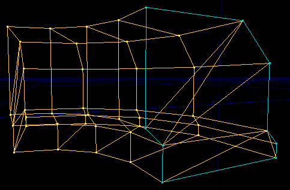

Making Curved Corridors
Machismo's tutorial, imported with permission to edit...
Introduction
Curved passages should not be created using vertex editing (although you could do it). Man it would be like wanting to ride along in a cart when you could actually zoom along on a Ferrari!. Before you start this tutorial, you should be somewhat familiar with the 2D Shape Editor and in particular with Making a 2D shape.
Let's see how to make one of those nice curved passages that seem to be used in nearly every level (like UT's DM-Zeto, DM-Liandri, etc.). Oh man this is going to be so simple to do but the results that you will get are going to make you go – wow that was easy!
How it works
The screenshot below shows a single brush made in the 2D Editor. The actual shape to draw in the editor is marked out in blue. When the 2D Ed processes this shape with the Revolve command, it takes the shape and rotates it around a point, the origin. In the picture, the origin would be somewhere to the left of the shape, and it's been rotated through 4 sides with 16 sides per circle.

|
The 2D shape used to make this can be downloaded: http://wiki.beyondunreal.com/dl.php/wiki/examplemaps/CurvedCorridor2D.zip
Making a shape
(idea: several tutes on the 2D Ed are going to cover techniques for making a shape: splitting sides, selecting multiple vertices, bezier etc... probably a good idea to put all this on a page like Making a 2D shape)
... more later...
Orientation
The 2D Ed builds the brush at the wrong angle. To place the corridor brush upright, go to side view, and rotate 90 degrees clockwise. Then switch to top view and orient the direction the corridor faces.
Remember:
- this won't work if your red builder brush already has a rotation applied from previously: UnrealEd Main Menu → Brush → Reset → Reset Rotation.
- the red builder brush will remember this rotation. This is very handy if you want to tweak the shape of your corridor back in the 2D Ed, but remember to reset it when you move on to making other shapes.
Finishing Touches
You may want to merge polygons to clean up the ends of your corridor. If your subtractive corridor brush is flush with another subtract and the end surface isn't present, then this isn't necessary.
Related Topics
- TarquinSpiralStairBuilder is a brushbuilder that can make halls